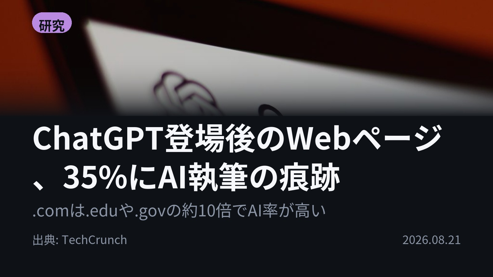
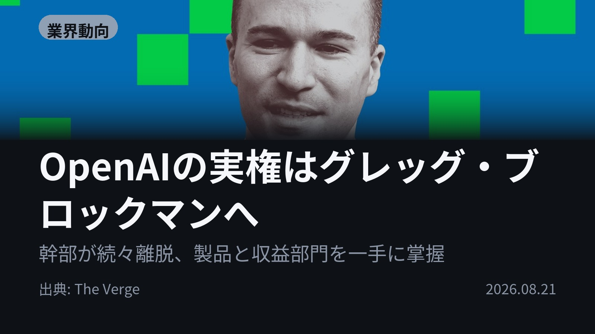
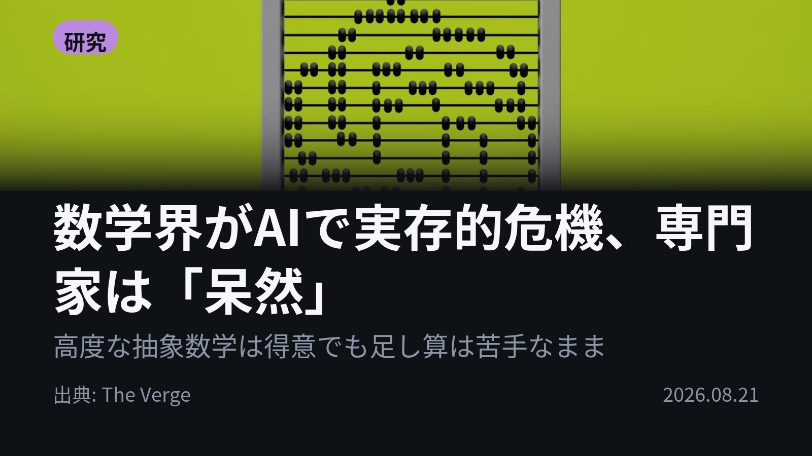
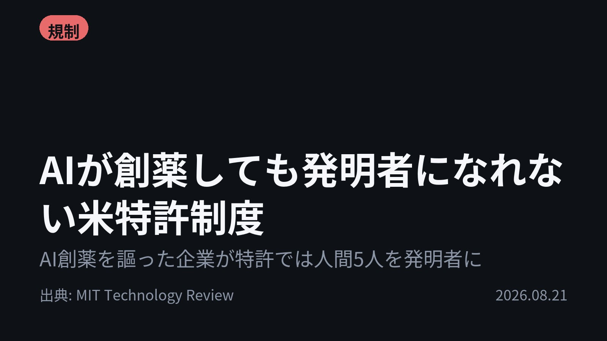

今日のAIニュース 下書き
2026-08-21 生成 08/22 08:50
⚠ ファクト照合で要確認の項目があります。
各ニュースの警告を確認してから投稿してください。
X（4投稿）
ChatGPT登場後のWebページ、35%にAI執筆の痕跡
原題: A third of web pages published since ChatGPT’s launch show signs of AI authorship, study finds

ChatGPT公開後に出たWebページの35%に、AI執筆の痕跡がありました。 Pew Research が約50万件の英語ページを解析。ドメイン別では.comが約10%で、.eduと.govの約1%に対し10倍。.orgは4.6%。 em dashやOxford commaの使用も年々増加。 #AI #PewResearch （出典: TechCrunch）
重み 254 / 280（見た目 178字）
要確認:
［数値］50万 — この数値の根拠が本文に見つかりません
［固有名詞］ドメイン — この語が本文に見つかりません
［固有名詞］ダッシュ — この語が本文に見つかりません
［固有名詞］TechCrunch — この語が本文に見つかりません
OpenAIの実権はグレッグ・ブロックマンへ
原題: It’s Greg Brockman’s OpenAI now

CEOはアルトマン、でも日々の実務を回しているのは別の人物。 OpenAI社長グレッグ・ブロックマンが製品戦略と「スケーリング」部門の両方を握り、商用部門のほぼ全体に権限を持つ状態に。4月以降、Sora元責任者や元COOら幹部の退社が続きます。 #AI #OpenAI （出典: The Verge）
重み 258 / 280（見た目 148字）
要確認:
［数値］4月 — この数値の根拠が本文に見つかりません
［固有名詞］アルトマン — この語が本文に見つかりません
［固有名詞］グレッグ — この語が本文に見つかりません
［固有名詞］ブロックマン — この語が本文に見つかりません
［固有名詞］スケーリング — この語が本文に見つかりません
［固有名詞］フィジー — この語が本文に見つかりません
［固有名詞］ピーブルズ — この語が本文に見つかりません
［固有名詞］ウェイル — この語が本文に見つかりません
［固有名詞］ブラッド — この語が本文に見つかりません
［固有名詞］ライトキャップ — この語が本文に見つかりません
数学界がAIで実存的危機、専門家は「呆然」
原題: Welcome to the AI crisis in math

AIは最高峰の抽象数学を解けるのに、足し算はいまだに苦手。 OpenAIが長年未解決の数学問題の解答を公開し、数学界は「呆然」。The Vergeの取材では、曜日や時刻もまだ間違えるといいます。 人間の数学者を育てる意味は何か、という問いが出ています。 #AI #数学 （出典: The Verge）
重み 263 / 280（見た目 147字）
要確認:
［数値］1年 — この数値の根拠が本文に見つかりません
［固有名詞］プログラム — この語が本文に見つかりません
AIが創薬しても発明者になれない米特許制度
原題: When AI designs a drug, who gets the credit?

AIが薬を設計したら、発明者は誰になるのか。 Insilico Medicineは肺線維症の候補分子を「生成AIが発見した」と発表しましたが、特許にはAIの記載がなく、CEOら人間5人が発明者。米控訴裁は2022年、法律上の発明者は人間だけと判断しています。 #AI #創薬 （出典: MIT Technology Review）
重み 268 / 280（見た目 163字）
要確認:
［数値］5人 — この数値の根拠が本文に見つかりません
［固有名詞］アレックス — この語が本文に見つかりません
［固有名詞］ジャヴォロンコフ — この語が本文に見つかりません
［固有名詞］ワシントン — この語が本文に見つかりません
［固有名詞］ライアン — この語が本文に見つかりません
［固有名詞］アボット — この語が本文に見つかりません
Instagram（カルーセル 6枚）

{kind=link}
{kind=link}
{kind=link}
{kind=link}
{kind=link}
{kind=link}
{kind=link}
{kind=link}
{kind=link}
ChatGPT公開後に生まれたWebページの35%に、AI執筆の痕跡。 読むのも書くのもボット、という状況が数字で見えてきました。 1. ① Pew Researchが Common Crawl から約50万件の英語ページを集めて解析。ChatGPT公開後のページに絞ると35%にAI執筆の痕跡がありました。 ドメイン別では.comが約10%、.eduと.govは約1%、.orgは4.6%。em dash（ダッシュ）やOxford comma、「it's not X, it's Y」という言い回しの増加も、AIらしさの手がかりとして挙がっています。(TechCrunch) 2. ② OpenAIの日常業務を回しているのは、社長で共同創業者のグレッグ・ブロックマン。フィジー・シモ氏の休職で製品全体を引き継ぎ、その後の組織再編で「スケーリング」部門も加わりました。 4月以降、Sora元責任者ピーブルズ氏、科学部門VPのウェイル氏、そして長年COOを務めたブラッド・ライトキャップ氏らが退社。IPO申請後の人事です。(The Verge) 3. ③ OpenAIが長年の未解決問題の解答を公開し、数学界に激震。The Vergeの記者が一流の数学者たちに取材したところ、返ってきたのは「shell-shocked（呆然）」という言葉でした。 一方でAIは足し算や曜日、時刻の把握がいまだに苦手。この6か月〜1年で急変した能力をどう捉えるか、そして人間の数学者を育てる助成金やプログラムに何の意味があるのか、が議論になっています。(The Verge) 4. ④ Insilico Medicineは肺線維症の候補分子を「生成AIプラットフォームが発見した」と発表。ところが特許出願書類にAIの記載はなく、CEOのアレックス・ジャヴォロンコフ氏を含む人間5人が発明者として名を連ねていました。 2022年、ワシントンDCの控訴裁は「発明者＝individual（人間）」と判断。弁護士のライアン・アボット氏は、発明者の記載誤りは特許を無効にする理由になり得ると指摘しています。(MIT Technology Review) Webの文章、企業の指揮系統、数学の証明、そして特許の発明者欄。AIがどこまで担っているかを、人間の側が数え直している4本でした。 毎朝4本、AIニュースを日本語でまとめています。あとで読み返したい方は保存を、明日も受け取りたい方はフォローをどうぞ。 #AI #生成AI #人工知能 #テクノロジー #AIニュース #ChatGPT #OpenAI #Claude #AI活用 #機械学習 #AI創薬 #数学 #特許 #スタートアップ #IT news #GregBrockman #PewResearch #Insilico #AInews #GenerativeAI #MachineLearning #TechNews
1231字（Instagram上限 2,200字）
この日の選定理由
ChatGPT登場後のWebページ、35%にAI執筆の痕跡
Webの新規コンテンツの3分の1超がAI製という推計は、学習データの汚染や検索の信頼性に直結する。ボット同士が読み書きする状況が現実味を帯びる。
OpenAIの実権はグレッグ・ブロックマンへ
IPOを控えたOpenAIが収益追求へ舵を切る中、誰が実務を握るかは製品戦略の方向を左右する。相次ぐ幹部退社の背景も見える。
数学界がAIで実存的危機、専門家は「呆然」
AIが最高峰の数学問題を解く一方で初等的な計算を誤るというねじれは、モデルの能力の本質を考えるうえで示唆的。数学教育や研究資金の意味も問われる。
AIが創薬しても発明者になれない米特許制度
AIの貢献を法律上どう扱うかが未解決のまま、企業は人間を発明者に立てて回避している。特許無効化の火種になり得る。